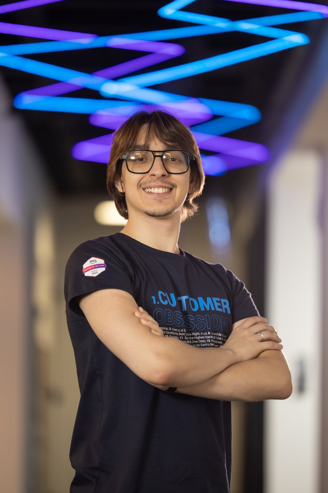
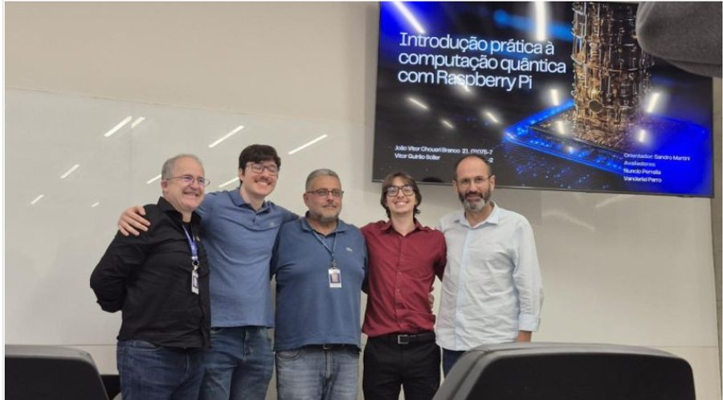
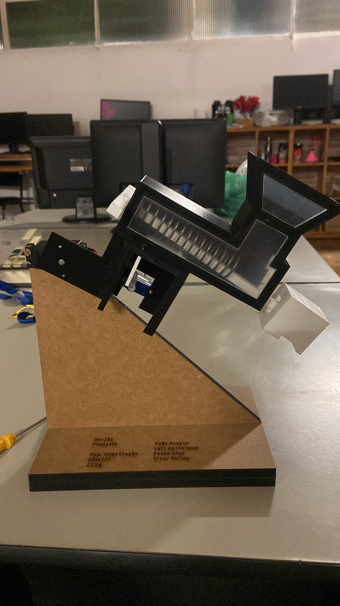
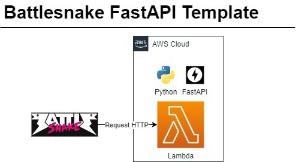
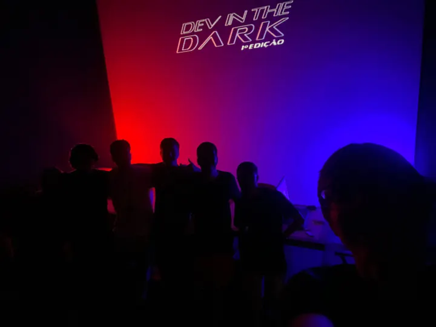

da Computação muito mais do que “frontend” e “backend”.
Quem aqui acha
que programar é fazer
site e aplicativo?
Então vamos começar do começo: o que são essas palavras?
mão levantada · deixa no ar antes de avançarFrontend, backend e banco de dados
O salão
É o garçom e o menu.
Tudo o que você vê e toca: tela, botão, cor, o cardápio na sua mão.
A cozinha
É quem cozinha o pedido.
Recebe o pedido, aplica as regras, faz a conta e devolve pronto. Ninguém vê.
O estoque
É a despensa do restaurante.
Guarda tudo de forma organizada e devolve rápido quando a cozinha pede.
Agora a pergunta que interessa: quem construiu o prédio, a fiação e o fogão?

Vitor Soller


Eu mudei de área três vezes em cinco anos.
Grupo acadêmico
Dev. Community Mauá: entrei voluntário, saí presidente.
Produto · Claro
Regras de negócio do Claro Flex, com UX, dev e logística.
Projetos · Dati
Prazo, risco e a ponte entre cliente e time técnico.
Infra e arquitetura AWS
Entrega técnica em nuvem. Nada disso era “o plano”.

Raspberry Pi,
fita de LED e
álgebra linear.
O primeiro TCC de Computação Quântica da história do Mauá. LED controlado por porta lógica quântica, com hardware real da IBM.
Não tem salão, nem cozinha, nem estoque. E é engenharia da computação do começo ao fim.
Nenhuma delas era “um site”

projeto-2.jpg


Engenharia não é só sofrer (juro)
vida-1.jpg
vida-2.jpg
vida-3.jpg
vida-4.jpg
Do elétron até a pessoa
operacional
Cinco formações, um mercado
Eng. da Computação
Hardware e software. 5 anos, com ciclo básico de engenharia.
Ciência da Computação
Teoria: algoritmo, complexidade, compilador, IA de raiz.
Eng. de Software
Como construir software grande sem ele desabar.
Sistemas de Informação
Software como ferramenta de empresa e de processo.
Ciência de Dados
Transformar dado bruto em decisão que vale dinheiro.
Isso aqui é um curso de computação
Tem semestre em que você não escreve uma linha de código. E por que estudar carga elétrica? Guarda essa pergunta.
A parte que a feira de profissões não conta
E é exatamente essa base chata que te deixa resolver depois o que os outros não conseguem.
Mesma sala. Caminhos bem diferentes.
amigos-1.jpg
amigos-2.jpg
amigos-3.jpg
Possibilidades bem diversas
Dev
Traduz problema humano em código.
70% do tempo é ler código dos outros, não digitar.
IA / ML
Treina e coloca modelo em produção.
Quase tudo é limpar dado. O modelo é a parte fácil.
Redes
Faz o pacote sair daqui e chegar lá.
Quando funciona, ninguém lembra que você existe.
Nuvem
Projeta e opera a infra onde tudo vive.
Paga muito sem exigir que você seja gênio em código.
Cibersegurança
Ataca e defende sistemas de verdade.
Dá pra entrar júnior, sim — com bastante estudo extra.
E nenhum deles faz “só frontend”
PO / Scrum
Decide o que entra no próximo mês e o que fica de fora. Passei por isso na Claro.
Você diz “não” o dia inteiro.
Gestão de Projetos
Prazo, risco e a ponte entre cliente e time técnico. É o que eu faço hoje.
Sem base técnica, o time não te respeita.
Banco / Fintech
Sistema onde 1 centavo errado vira processo judicial.
Paga muito bem e cobra na mesma medida.
Dados
Constrói o caminho do dado até virar decisão de diretoria.
Metade do trabalho é descobrir que o dado está errado.
A faculdade acontece fora da sala também
- Quatro anos de voluntariado: entrei sem saber nada e saí presidente.
- Projetos com usuário de verdade, campeonatos, masterclasses, eventos.
- Aprendi ali o que nenhuma matéria ensina: falar com cliente, liderar time, entregar no prazo.
- Foi isso, e não a minha nota, que me deu o primeiro estágio.
Quanto dinheiro está em cima disso
O Gartner chama a corrida de nuvem e IA de “o maior projeto de infraestrutura já tentado pela humanidade”.
O “servidor” é um prédio

Resfriamento, carga elétrica, energia renovável. Ainda acha que eletricidade não tem a ver com computação?
IA não é mágica. É a soma de três coisas.
Matemática
Álgebra linear e estatística. A mesma matéria que roda no meu TCC.
Dado
Muito, limpo e bem rotulado. É onde 80% do trabalho real acontece.
Hardware
GPU, memória, rede e energia. Caro, escasso e disputado.
Um modelo de linguagem está prevendo o próximo pedaço de palavra. Ele não pensa, não sabe e não quer nada.
Todo mundo fala do modelo.
Mas o gargalo é GPU,
memória e energia.
A corrida da IA devolveu o protagonismo pro hardware. Que é justamente o que a Engenharia da Computação estuda desde o primeiro semestre.
Tem quem usa IA e tem quem constrói IA
Usar
Prompt, ferramenta, atalho. Em cinco anos todo mundo vai saber, inclusive o seu tio.
Não é diferencial. É o novo Excel.
Construir e sustentar
Dado, infra, custo, avaliação, segurança do modelo, o que fazer quando ele erra.
Aqui falta gente, e é onde está o dinheiro.
“A IA vai roubar
o meu emprego?”
Vamos falar disso agora, de frente.
O que acontece com quem se especializa
Pesquisa com profissionais certificados em nuvem. Não é sorte, é escassez de gente qualificada.
Quatro coisas que dá pra fazer amanhã
ESP32
Uma placa do tamanho de um chiclete. Wi-Fi, sensor, LED. Hardware de verdade.
AWS Free Tier
Sobe um servidor hoje e paga zero. A mesma nuvem que a Netflix usa.
Certificação
Tirei a primeira AWS ainda na faculdade. Dá pra estudar em 4 semanas.
Um problema seu
Resolve algo chato da sua casa ou da escola com código. Vale mais que curso.
Aos 17 você não
escolhe um cargo.
Escolhe uma base.
E ela te leva muito mais longe do que você imagina.
Qualquer dúvida, me chama
Instituto Mauá